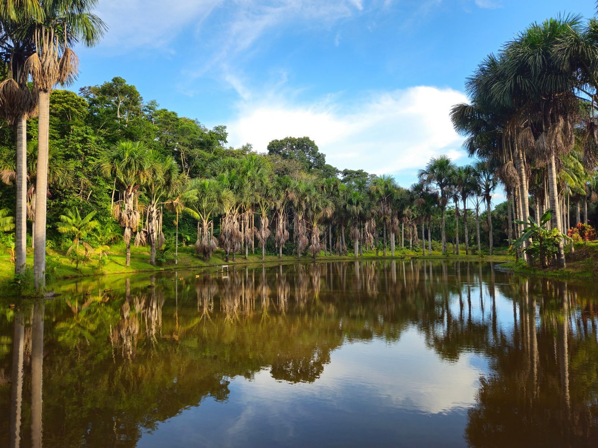
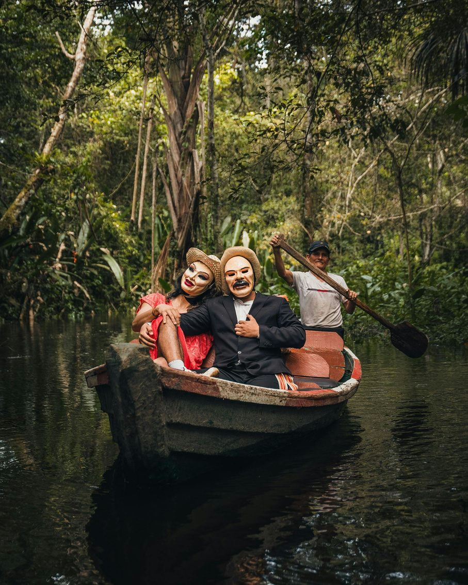
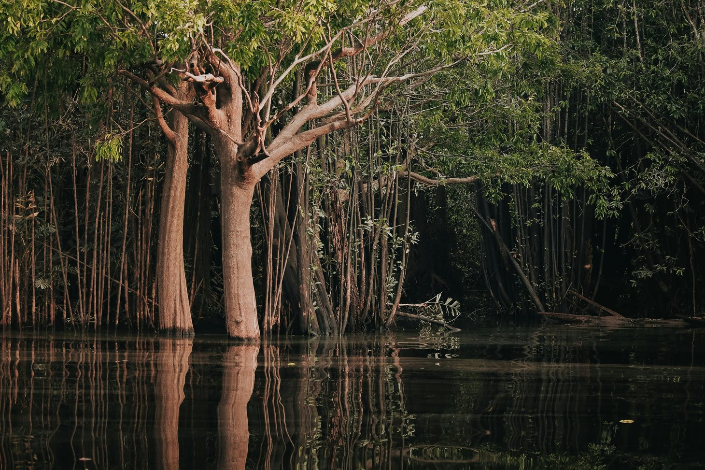
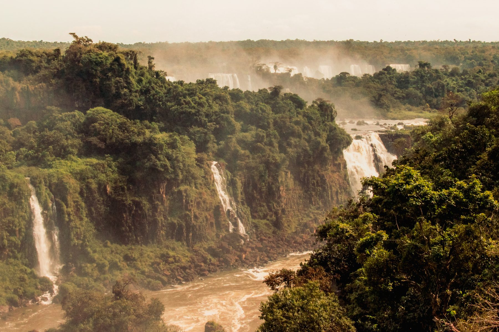
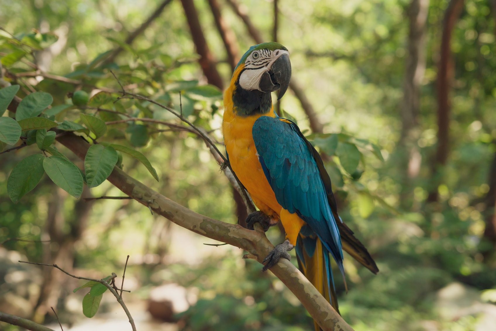

Pesquisa de mercado · novembro de 2026
Problemas reais da região, startups possíveis, um app de saúde para o SUS, vendas a estados, Minas Gerais e Amapá, softwares de referência dos EUA, China e Europa e os caminhos legais para contratar.
Valores legais de 2026. Confirme no texto oficial antes de usar em proposta.

≈ 5,0 mi km²
Amazônia Legal, cerca de 59% do território brasileiro
9 estados
AC, AP, AM, PA, RO, RR, TO, MT e parte do MA; 772 municípios
≈ 27 mi
Habitantes, a maioria em cidades
≈ 51%
Da população indígena do país vive na região (Censo 2022)
Desmatamento
5.796 km²
PRODES 2025 (ago/24 a jul/25). Queda de 11% e menor taxa em 11 anos.
Rio Amazonas
≈ 20%
De toda a água doce que chega aos oceanos sai pela sua foz. Mais de mil afluentes.
População por estado · Censo 2022

Poucos médicos, comunidades a dias da sede, malária e mercúrio do garimpo. Startup: app offline para agentes de saúde (pág. 7). Compra: secretarias de saúde, DSEIs.
Estoque em papel e perdas por validade. Startup: estoque e logística offline de polos-base. Compra: Ministério da Saúde (SESAI), DSEIs.
Turma multisseriada e frequência em papel. Startup: "escola na caixa" com Wi-Fi local e conteúdo offline. Compra: secretarias de educação (FUNDEB, PNATE).
Superlotação e naufrágios. Startup: bilhete digital com manifesto, Pix e rastreio. Compra: agências reguladoras, prefeituras.
O município recebe o alerta e não age. Startup: painel com fluxo de vistoria e foto georreferenciada. Compra: secretarias de meio ambiente.
Posses sem documento. Startup: REURB digital com drone e cadastro social. Compra: institutos de terras e prefeituras.
Startup: sensores de nível de rio, previsão e alertas por SMS e WhatsApp, controle de doações. Compra: defesas civis.
Startup: monitoramento remoto de miniusinas solares e energia pré-paga. Compra: concessionárias, programas federais.
Startup: rastreabilidade do lote e venda direta para a merenda (PNAE: mínimo de 30% da agricultura familiar). Compra: cooperativas, prefeituras.
Startup: recadastramento por imagem aérea e IA, IPTU e nota fiscal no padrão nacional. Se paga com a receita nova.
Startup: kit de atendimento itinerante em barco, com biometria e Cadastro Único offline. Compra: assistência social, tribunais.
Startup: inteligência que cruza satélite, registro de barcos e ocorrências. Compra: segurança pública, órgãos ambientais.
Ideia principal
Rabeta é o motor de popa que leva o ribeirinho a todo lugar. O app funciona sem internet, roda em celular barato e envia os dados quando acha sinal.

Como o dado viaja
Celular offline → fila de envio → Wi-Fi da UBS ou satélite → nuvem do município → e-SUS APS e RNDS
Android 8+, SQLite local, padrão FHIR, criptografia e registro de acesso (LGPD). Telessaúde pela Lei 14.510/2022.
Funções
Implantação
R$ 12 mil
Valor único, município pequeno
Licença
R$ 35
Por agente de saúde por mês
Exemplo: 100 agentes = R$ 42 mil por ano. Com a implantação, o 1º ano soma R$ 54 mil, abaixo do limite de dispensa de 2026 (R$ 65.492,11). O contrato pode sair em semanas.
De onde vem o dinheiro do comprador
| Sistema | Quem compra | Por que compra | Prioridade |
|---|---|---|---|
| Regulação de leitos e fila de cirurgias | Saúde | Pressão por fila transparente | Alta |
| Gestão escolar e busca ativa | Educação | Frequência condiciona programas federais | Alta |
| Licenciamento ambiental digital | Meio Ambiente | Fila de licenças trava investimento | Alta |
| Inteligência fiscal e dívida ativa | Fazenda, Procuradoria | Arrecadação; transição para o IBS | Alta |
| Atendimento por WhatsApp com IA | Casa Civil, ouvidorias | Lei de Governo Digital; menos filas | Média |
| Alertas hidrológicos | Defesa Civil | Secas e cheias recorrentes | Média |
| Gestão de frota e combustível | Administração | Economia rápida de medir | Média |
| Cibersegurança | Empresa estadual de TI | Ransomware em órgãos públicos | Média |
Atalho
Cada estado tem sua empresa pública de TI: Prodemge (MG), PRODAP (AP), PRODEPA (PA), PRODAM (AM). O governo pode contratá-la diretamente. Ser parceiro tecnológico dela abre portas.
Momento certo
Nov e dez de 2026
Os governadores eleitos em outubro tomam posse em janeiro de 2027. Apresente soluções agora às equipes de transição.
| Município | Habitantes | Abordagem |
|---|---|---|
| Belo Horizonte | 2,32 mi | Edital ou inovação aberta |
| Uberlândia | 713 mil | Caso de referência |
| Contagem | 622 mil | Saúde e educação |
| Juiz de Fora | 541 mil | Polo da Zona da Mata |
| Montes Claros | 414 mil | Saúde regional |
| Betim | 412 mil | Receita industrial |
| Uberaba | 338 mil | Gestão fiscal |
| Ribeirão das Neves | 330 mil | Demanda social |
| Gov. Valadares | 257 mil | Vale do Rio Doce |
| Divinópolis · Ipatinga · Sete Lagoas | ≈ 230 mil | Decisão rápida |
O que vender às prefeituras mineiras
Cadastro de fornecedores (CAGEF) e certidões em dia evitam desclassificação por documento.
O atestado de capacidade técnica desse contrato abre as próximas licitações.
Outros órgãos aderem à ata: até 50% por órgão e até o dobro do total registrado.
O art. 81, §4º da Lei 14.133 permite restringir o procedimento a startups.
O congresso anual reúne prefeitos do estado inteiro.
Comunidade de startups, FAPEMIG e programas estaduais de inovação.
Sem ligação rodoviária com o resto do país, com fronteira com a União Europeia (Guiana Francesa) e com a nova fronteira do petróleo na costa.
16
municípios
734 mil
habitantes
≈ 70%
em áreas protegidas e terras indígenas
22 dias
de apagão em novembro de 2020
Em out/2025 o IBAMA autorizou a Petrobras a perfurar na Foz do Amazonas. Startup: cadastro e qualificação de fornecedores e mão de obra local; monitoramento de manguezais e derrames.
Surtos de Chagas por açaí contaminado ocorrem quando falta branqueamento. Startup: certificação digital de batedores e selo com QR Code. Compra: vigilância sanitária.
Áreas alagáveis com palafitas, sem saneamento nem cadastro. Startup: mapeamento por drone, cadastro social e REURB. Compra: Macapá, Santana, governo do estado.
Startup: monitoramento de geradores, nobreaks e combustível em hospitais, escolas e centros de dados. Compra: saúde, defesa civil, PRODAP.
Startup: prontuário de bolso em português e francês para a fronteira e para os povos Karipuna, Galibi e Palikur. Compra: Oiapoque, estado, saúde indígena.
Startup: registro digital do pescador e do desembarque, com rastreio do pescado. Compra: secretaria de pesca, colônias, prefeituras.
Como entrar no Amapá
Parcerias com UNIFAP, IFAP, UEAP e IEPA dão base técnica e acesso aos editais de inovação da FAPEAP e do Sebrae. A PRODAP é o canal para sistemas do governo. Como quase todos os 16 municípios são pequenos, um "kit prefeitura" de conformidade e gestão vendido para todos de uma vez é a entrada mais rápida.
5.570 municípios, 27 estados e centenas de órgãos federais compram pela mesma lei. Quem resolve uma exigência da Lei 14.133 vende em qualquer lugar.
| Startup | Dor que resolve | Comprador | Modelo |
|---|---|---|---|
| IA para Estudo Técnico Preliminar e Termo de Referência | Documentos obrigatórios que poucos servidores dominam | Qualquer órgão | Assinatura |
| Pesquisa de preços automática | Exigida pela lei; os dados estão no PNCP | Setores de compras | Assinatura |
| App do fiscal de contrato | Contrato sem fiscalização gera apontamento do tribunal de contas | Todo órgão | Por usuário |
| Dívida ativa com protesto e acordo online | Créditos parados | Prefeituras, procuradorias | Mensal + desempenho |
| Atendimento por WhatsApp com IA | Filas e telefone sem resposta | Prefeituras, estados | Por conversa |
| Zeladoria pelo cidadão | Buraco, lâmpada e lixo sem fluxo | Prefeituras | Assinatura |
| LGPD como serviço | Município sem encarregado de dados | Prefeituras, câmaras | Mensal |
| Cibersegurança municipal | Ransomware paralisa prefeituras | Prefeituras, autarquias | Mensal |
| Fila de saúde transparente e telemetria de frota | Cidadão sem posição na fila; desvio de combustível | Saúde; todo órgão com frota | Assinatura |

Link de internet e SD-WAN, Wi-Fi público em praças e escolas, nuvem e data center, backup, certificados digitais.
Tablets para agentes de saúde, sala de aula conectada, totens de autoatendimento, câmeras com leitura de placas, drones.
Sensores de nível de rio e de qualidade do ar, iluminação pública inteligente, medidores de água e energia.
Suporte técnico, fábrica de software, ciência de dados e painéis, treinamento de servidores, segurança da informação.
Produtos comuns costumam ser comprados por pregão com registro de preços. É onde uma revenda ou integradora regional ganha volume.
REFERÊNCIAS INTERNACIONAIS · 1 DE 3

| Software | Empresa | O que faz | Como usar no Brasil |
|---|---|---|---|
| CommCare | Dimagi | App offline para agentes comunitários de saúde, usado em dezenas de países | Referência direta para o Rabeta Saúde |
| Community Health Toolkit código aberto | Medic | Plataforma gratuita e offline para agentes de saúde | Base pronta para acelerar o primeiro protótipo |
| ArcGIS | Esri | Geoprocessamento e cadastro territorial | Padrão em prefeituras; dá para competir com QGIS mais barato |
| Earth Engine | Análise de imagens de satélite em escala; usado pelo MapBiomas | Alertas de desmatamento e mapas de uso do solo | |
| Planet | Planet Labs | Imagens de satélite diárias; já fornecidas a órgãos brasileiros pelo programa Brasil MAIS | Fiscalização ambiental e segurança |
| Tyler (Munis e outros) | Tyler Technologies | Sistemas de gestão para governos locais: finanças, tributos, tribunais | Modelo de negócio de "ERP municipal" a copiar |
| Accela | Accela | Alvarás e licenciamento online | Referência para licenciamento ambiental digital |
| Foundry | Palantir | Integração de dados de governo; contrato com o sistema de saúde britânico | Referência de painel estadual (caro) |
| Zipline | Zipline | Drones que entregam remédios e sangue | Logística de saúde em comunidades isoladas |
REFERÊNCIAS INTERNACIONAIS · 2 DE 3
| Software | Empresa | O que faz | Como usar no Brasil |
|---|---|---|---|
| City Brain | Alibaba Cloud | IA para trânsito e operação urbana, nascida em Hangzhou | Modelo de centro de operações municipal |
| Zheliban | Governo de Zhejiang | App único de serviços públicos da reforma "ir no máximo uma vez" | Modelo de super-app municipal via WhatsApp |
| RuralStar | Huawei | Estações de celular baratas e solares para áreas remotas | Conectividade de comunidades ribeirinhas |
| Intelligent Operation Center | Huawei | Centro integrado de cidade inteligente | Referência para salas de situação estaduais |
| DJI Terra + drones | DJI | Mapeamento 3D e ortofotos a partir de drones | Recadastramento imobiliário e REURB |
| Smart Doctor Assistant | iFlytek | IA de apoio ao diagnóstico em clínicas rurais | Referência para triagem por IA no app de saúde |
| Ping An Good Doctor | Ping An | Telemedicina com triagem por IA para milhões de usuários | Modelo de teleconsulta em escala |
| CBERS imagens grátis | China e Brasil (INPE) | Satélites sino-brasileiros; imagens usadas pelo INPE no monitoramento | Dados gratuitos para produtos ambientais |
| Câmeras Hikvision e Dahua atenção | Hikvision, Dahua | Videomonitoramento e reconhecimento | Restrições nos EUA e na Europa; avalie risco de privacidade |
REFERÊNCIAS INTERNACIONAIS · 3 DE 3
| Software | Origem | O que faz | Como usar no Brasil |
|---|---|---|---|
| DHIS2 código aberto | Univ. de Oslo, Noruega | Sistema de informação em saúde usado em mais de 80 países | Painéis de indicadores de saúde |
| X-Road código aberto | Estônia e Finlândia | Troca segura de dados entre órgãos; base do governo digital estoniano | Interoperabilidade entre sistemas estaduais |
| Copernicus / Sentinel imagens grátis | União Europeia e ESA | Satélites gratuitos; o radar do Sentinel-1 enxerga através das nuvens | Monitoramento na estação chuvosa |
| Starling | Airbus | Monitora desmatamento em cadeias de fornecimento | Rastreabilidade exigida por compradores europeus |
| SAP para setor público | SAP, Alemanha | Gestão financeira e de RH de governos | Concorrente grande; atue como integrador |
| Decidim código aberto | Barcelona, Espanha | Participação cidadã e orçamento participativo | Escuta pública municipal |
| Signalen código aberto | Amsterdã, Holanda | Registro e tratamento de reclamações urbanas | Zeladoria municipal |
| GOV.UK Notify código aberto | Reino Unido | Envio de SMS, e-mail e cartas pelo governo | Alertas da defesa civil e avisos ao cidadão |
| Doctolib | França | Agendamento de consultas online | Agenda da UBS e do barco-hospital |
Copiar
Cuidado
Oportunidade
Ser o integrador brasileiro dessas soluções. Empresa estrangeira precisa de representante legal no país para participar de licitação.
Começar grátis com código aberto: Community Health Toolkit, DHIS2, X-Road, Decidim, Signalen, GOV.UK Notify, QGIS. O valor está em adaptar, implantar e dar suporte.
Valores de 2026 atualizados pelo Decreto 12.807/2025. Escolha o caminho pelo tamanho e pelo tipo do produto.
| Caminho | Base legal | Quando usar | Limite | Velocidade |
|---|---|---|---|---|
| Dispensa por valor | Lei 14.133, art. 75, II | Primeiro contrato, piloto pago | R$ 65.492,11/ano | Semanas |
| Pregão eletrônico | Lei 14.133 | Software e serviços comuns | Sem limite | 1 a 3 meses |
| Registro de preços e adesão | Lei 14.133, arts. 82 a 86 | Escalar para outros órgãos | 50% por órgão; 2× total | Rápida |
| Contrato de solução inovadora (CPSI) | LC 182/2021, arts. 12 a 15 | Testar e depois fornecer sem nova licitação | R$ 1,6 mi no teste | 2 a 4 meses |
| Encomenda tecnológica | Lei 10.973, art. 20 | Problema com risco tecnológico | Sem limite fixo | Meses |
| Manifestação de interesse para startups | Lei 14.133, art. 81, §4º | Entrar no planejamento do órgão | — | Planejamento |
| Diálogo competitivo | Lei 14.133, art. 32 | Órgão grande sem solução definida | Sem limite | Longa |
| Inexigibilidade | Lei 14.133, art. 74 | Fornecedor exclusivo comprovado | Sem limite | Risco alto |
| Consórcio público | Lei 11.107/2005 | Vários municípios de uma vez | Conforme modalidade | Variável |
Vantagens para ME e EPP · LC 123/2006
O que nunca fazer
Dias 1 a 30
Dias 31 a 60
Dias 61 a 90
Este material não é parecer jurídico. Números de população vêm do Censo 2022, arredondados. Confirme valores e prazos no texto oficial.